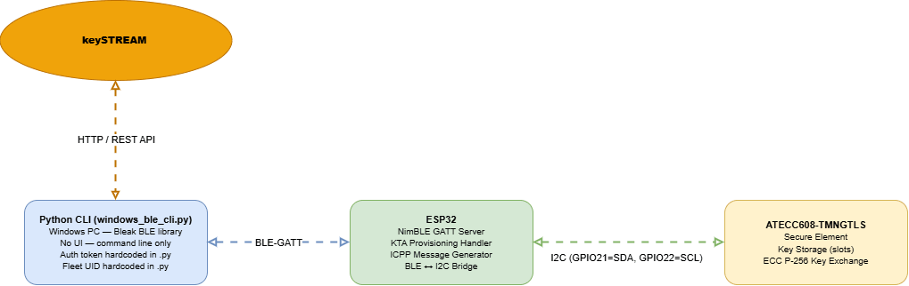
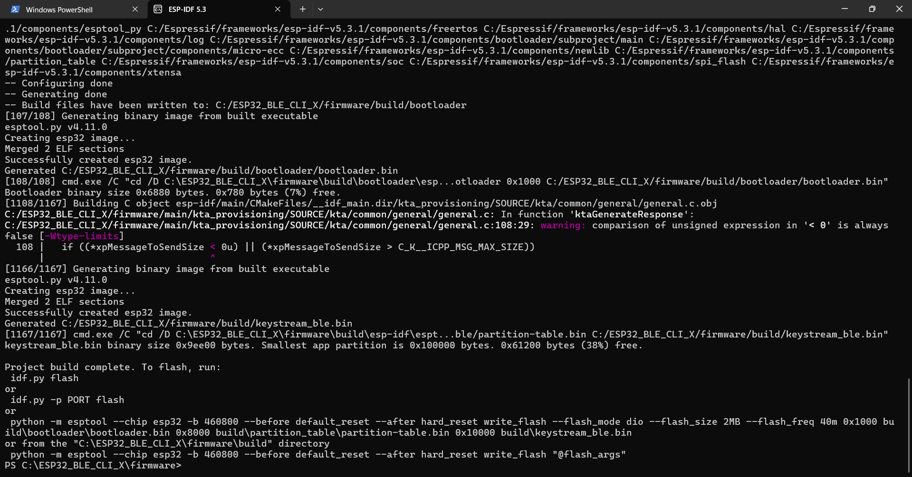
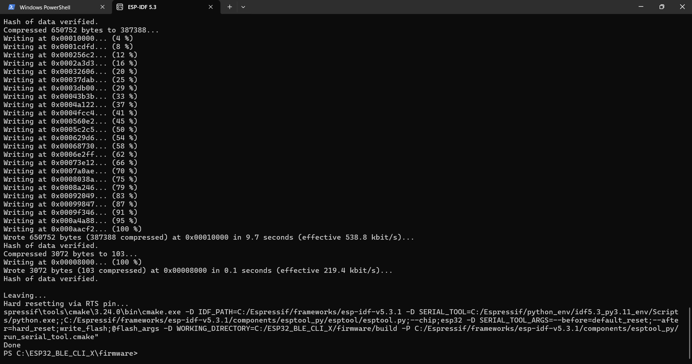

Windows CLI Usage Guide — keySTREAM Provisioning
This guide covers how to onboard a device to keySTREAM using the Windows CLI.

Pre-integrated Steps (Simple) - ESP32 BLE CLI (Python)
| Item | Details |
|---|---|
| Example | ESP32 - BLE - CLI (Python) |
| Board | ESP32 + ATECC608 |
| Interface | Windows Python CLI over BLE |
| Required Config | Python 3.11+, claimed device MAC |
| Step 1 | Verify Python is installed and install dependencies |
| Step 2 | Run provisioning command with device MAC |
- Note
- Service Availability Notice: The Signing Key Service and Symmetric Key Service are currently under active development for the ESP32 MCU platform. Full support for these cryptographic services will be introduced in a forthcoming release.
File Structure
Note: Place the project in a short root path (e.g.
C:\ESP32_BLE_CLI_X\) to avoid build issues caused by long file paths in ESP-IDF.
The CLI (
windows_ble_cli.py) reads the Fleet Profile UID fromApp_Config.hat the project root, and the cloud URL fromfirmware/main/kta_provisioning/SOURCE/include/ktaConfig.h. Both files are the single source of truth — do not hardcode these values in the script.
Prerequisites
Before building and flashing:
keySTREAM Portal Requirements
| Requirement | Description | Guide |
|---|---|---|
| Fleet Profile UID | Create a Fleet Profile and copy its public UID into App_Config.h | Fleet Profile Creation Guide |
This step must be completed before configuring
App_Config.hand running the provisioning CLI.
Required Hardware & Software
| Item | Purpose |
|---|---|
| ESP32 development board | Main microcontroller |
| ATECC608 Secure Element | Cryptographic key storage (I2C connected) |
| USB Micro-B cable | Power and data transfer (not charge-only) |
| Windows 10/11 with Bluetooth | Host computer for building and flashing |
| ESP-IDF v5.3.1 | Build framework (install once) |
| Python 3.11 or newer | Required for the CLI tool (download from https://www.python.org/downloads/ and check "Add Python to PATH"). This is your system Python and is separate from the Python 3.12 bundled inside ESP-IDF that builds the firmware. |
| The device claimed in keySTREAM portal | Device MAC must be registered before provisioning |
To claim your device:
- Go to your keySTREAM portal and create/select a fleet
- Add/claim your device using its MAC address (e.g.
1C:69:20:82:DC:E6) - Once claimed, it will show as "registered" in the portal
Install USB-to-Serial Driver
The ESP32 uses a CP210x USB-to-UART chip. Install the driver:
- Download: https://www.silabs.com/developers/usb-to-uart-bridge-vcp-drivers
- Extract and run
CP210xVCPInstaller_x64.exe - Plug in the ESP32 via USB
- Verify in Device Manager → Ports (COM & LPT): device should appear as
Silicon Labs CP210x ... (COM4)
If not visible, try the CH340 driver instead: http://www.wch-ic.com/downloads/CH341SER_EXE.html
Package Setup
Before building, clone the repository:
Then configure the firmware package using the provided script:
- Navigate to
keySTREAM_provisioning\PreIntegrated-Examplesin the package - Open PowerShell and run
.\Config.ps1 - Select TrustMANAGER when prompted
- Select your device — ESP32_BLE_CLI_X
- The script generates the configured firmware package; place the generated
ESP32_BLE_CLI_Xfolder in your preferred path (e.g.C:\) and proceed to build and flash
If you encounter any error while running
Config.ps1, refer to the Config.ps1 — Troubleshooting & Usage guide.

Hardware Setup – ESP32 to ATECC608 Wiring
Connect the ATECC608 secure element to the ESP32 using the following I2C pins:
| ESP32 Pin | ATECC608 Pin | Description |
|---|---|---|
| GND | GND | Ground |
| 3V3 | 3V3 | Power (3.3V) |
| GPIO 21 | SDA | I2C Data |
| GPIO 22 | SCL | I2C Clock |

Firmware Setup & Build
Install ESP-IDF (One Time)
Download the Offline Installer for Windows from: https://dl.espressif.com/dl/esp-idf/
Run installer, select v5.3.1, install to: C:\Espressif\
Build Firmware
The build process completed successfully without any errors.

Flash & Monitor
Find your COM port in Device Manager → Ports (COM & LPT) and replace COM4 below:
The firmware was flashed successfully to the ESP32, and the device is ready to use.

Press Ctrl + ] to exit monitor. Expected output: Advertising started as ESP32-Keystream
Quick Setup & Provisioning
1. Verify Python and Install Dependencies
Make sure Python 3.11+ is installed and available in your PATH (you can verify by running python --version in PowerShell).
Open PowerShell and run:
If the above command does not work, try:
2. Provision Your Device
Find your ESP32 MAC address (usually on device label, e.g. 1C:xx:xx:xx:xx:E6), then run:
Replace 1C:xx:xx:xx:xx:E6 with your actual MAC address. Press Ctrl + C to stop.
Advanced Options
Find Device MAC (if unknown)
Set the Fleet Profile UID
The CLI reads the Fleet Profile UID at runtime from App_Config.h at the project root (C:\ESP32_BLE_CLI_X\App_Config.h). Open that file and set:
Replace 9S4F:esp32 with the Fleet Profile UID from your keySTREAM portal. The same App_Config.h value is used by the firmware, so configure it once before building the firmware and running the CLI. If the UID is missing or left as a placeholder, the CLI exits with: ‘'KEYSTREAM_DEVICE_PUBLIC_PROFILE_UID’ is not properly set in App_Config.h`.
The cloud URL is not set here — it is derived automatically from
C_KTA_APP__KEYSTREAM_HOST_HTTP_URLinktaConfig.h. Override it only for testing with the--cloud-urloption.
Expected Output
Provisioning is complete when exchanges stabilize and device returns empty payloads.
Troubleshooting
| Problem | Fix |
|---|---|
idf.py not found | Run the export.ps1 command first to activate ESP-IDF |
| COM port not visible | Install USB driver (CP210x or CH340); restart Device Manager |
| Flash fails "could not open port" | Close monitor and ensure no other app uses the COM port |
| Build fails "configured for different project path" | Run idf.py fullclean then idf.py build again |
| Device not in BLE scan | Check monitor logs — should say Advertising started as ESP32-Keystream |
| Build errors with KTA library | Verify the sources under firmware/main/kta_provisioning/ are present; try idf.py fullclean |
device not found (CLI) | Make sure the ESP32 is powered on and the monitor shows Advertising started as ESP32-Keystream |
ModuleNotFoundError: bleak | Run pip install bleak pycryptodome requests or python -m pip install bleak pycryptodome requests |
HTTP 500 from cloud | The device payload may be invalid or device is not claimed in the portal — try power-cycling the ESP32 and running again |
| BLE disconnects mid-session | Add --cloud-fail-policy stay-connected — the CLI will reconnect and resume automatically |
| Device not claimed | Go to the keySTREAM portal and make sure the device MAC is registered in your fleet |
Note: The CLI runs with standard Python — no virtual environment is needed. Simply run all commands using
python windows_ble_cli.py ...directly.
Enabling KTA Debug Logs
KTA runtime logs (initialization, provisioning rounds, error codes) are controlled by the LOG_KTA_ENABLE macro in ktaConfig.h.
Location of ktaConfig.h
After running Config.ps1, the file is generated at:
Enable the logs
Open ktaConfig.h and locate the LOG LEVEL CONFIGURATION - USER SECTION. Uncomment the LOG_KTA_ENABLE line and set the desired level:
Available log levels:
| Value | Level | Shows |
|---|---|---|
C_KTA_LOG_LEVEL_DEBUG | 1 | DEBUG and everything above |
C_KTA_LOG_LEVEL_INFO | 2 | INFO, WARN, ENTRY/EXIT, ERROR |
C_KTA_LOG_LEVEL_WARN | 3 | WARN, ENTRY/EXIT, ERROR |
C_KTA_LOG_LEVEL_ENTRY_EXIT | 4 | ENTRY/EXIT, ERROR |
C_KTA_LOG_LEVEL_ERROR | 5 | ERROR only |
C_KTA_LOG_LEVEL_NONE | 6 | No logs |
View the logs
- Rebuild and reflash the firmware after changing the log level: idf.py -p COM4 build flash monitor
- The ESP-IDF monitor opens at 115200 baud — KTA logs appear on the serial console as the BLE provisioning flow runs.